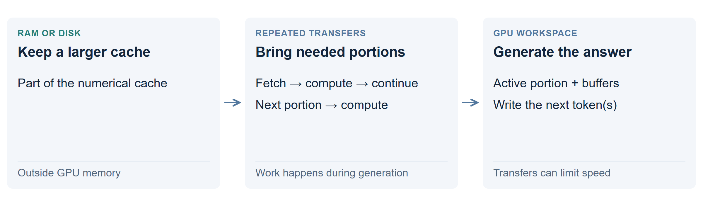

Offload an active cache to RAM or disk
Keep part of the active numerical cache outside the GPU and access it as the model works. This trades data movement or CPU computation for more capacity. It requires support inside the inference engine.

How does it work?
While generating an answer, attention uses information from earlier tokens. An offloading engine can keep some of those stored numbers in system RAM or on disk, bringing needed portions to the GPU in stages. Some designs do part of the computation on the CPU instead.
Unlike parking an inactive cache, this extra work happens while the session is active. Unlike searching text files, the system is moving the model’s internal numbers, not selecting a few passages to read.
Does this give unlimited context?
No. It can help with memory capacity, but does not extend the model’s supported window. The engine still needs buffers and working space, and longer histories require more storage and work.
What do the results show?
Active RAM or disk offloading was not benchmarked here. The measured speed of about 35 tokens/s at 200K used an in-memory cache. It is not a disk-backed speed.
Why might it help? What could make it slow?
It can make a larger active context possible on a constrained GPU. But repeated transfers can become the bottleneck; RAM and disk have different bandwidth and latency. A faster drive does not remove all transfer or computation costs.
A GPU with only a few KB free cannot simply point to a text file and gain 200K active tokens. Use a supported offloading engine, or keep a smaller context and retrieve relevant records.
Technical details: why bytes ÷ bandwidth is not tokens/second
This model’s full-attention cache at 200K is about 13.1 GB, before other state. Moving that much data once at a hypothetical 5 GB/s takes at least 2.62 seconds. That is a transfer illustration, not a measured token latency.
Partial GPU residence, layer-by-layer staging, overlapping transfers with computation and accepted draft tokens change how much data moves per generated token. CPU attention changes the calculation again. A useful benchmark must measure the actual engine, hardware and output quality.
Transfer examples and memory sizes · Original offloading discussion